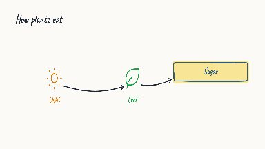
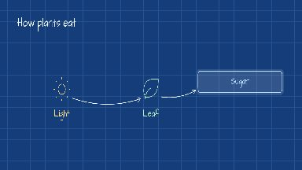
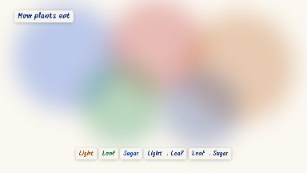
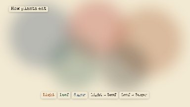
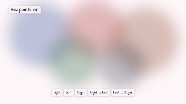

Your sources, turned into something you can learn from.
Notabit is the open-source, self-hosted NotebookLM alternative. Put in PDFs, web pages, YouTube videos and recordings, and get narrated decks, video and audio overviews, mind maps and notes. Every claim links back to its source.
Put your sources in, get something to learn from
Collect your sources in one collection, then make any of these from them.
Narrated slide decks
Stop at any point and ask a question out loud.
Video overviews
Slides or a hand-drawn whiteboard in ten looks, with chapters and captions that follow along word by word.
Audio overviews
One host or two, talking it through.
Mind maps and study notes
The shape of a topic at a glance, and notes to revise from.
Chat with citations
Ask your sources questions and keep an answer as a note. Every claim links to its passage.
Transformations
A summary, key claims, flashcards, a timeline, or an instruction of your own.
Ten looks
Pick a look that fits the material, from a clean whiteboard to watercolor.










Collect, make, check
Every claim can be followed back to the passage it came from.
Collect
Add PDFs, Office files, links, YouTube videos, recordings or notes.
Make
Choose a deck, a video, an audio overview, a mind map or notes.
Check and share
Follow a claim to its source, then share the collection on Discover so others can read or reuse it.
Yours to run, with any model
It runs on your machine or server, and your sources stay in your own Postgres. There is no telemetry, and it is MIT licensed.
- OpenRouter
- OpenAI
- Anthropic
- Google Gemini
- Azure OpenAI
- Mistral
- Groq
- DeepSeek
- Cohere
- Qwen
- Fireworks
- Cerebras
- Together
- xAI
- Ollama
- LM Studio
- Any OpenAI-compatible server
It is also an MCP server, so your own agents can read collections and ask questions with citations.
Four commands
You need Docker and an AI provider. A short setup tour on first run tests your key and suggests a model for each kind of work.
git clone https://github.com/mahmoud-emad/notabit.git
cd notabit
cp deploy/.env.example deploy/.env # set POSTGRES_PASSWORD
make up
Then open http://localhost/ui/. The full guide is in the
README.